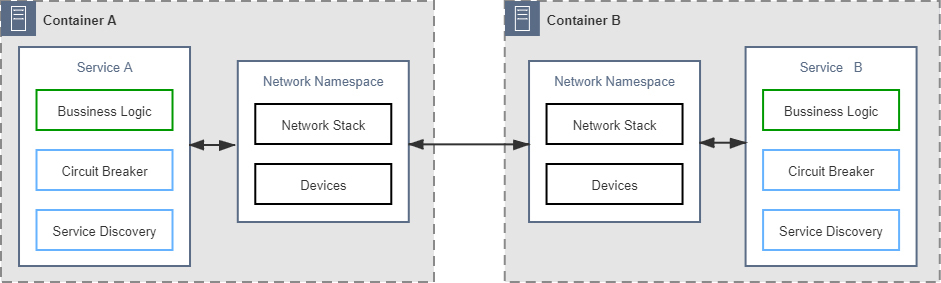
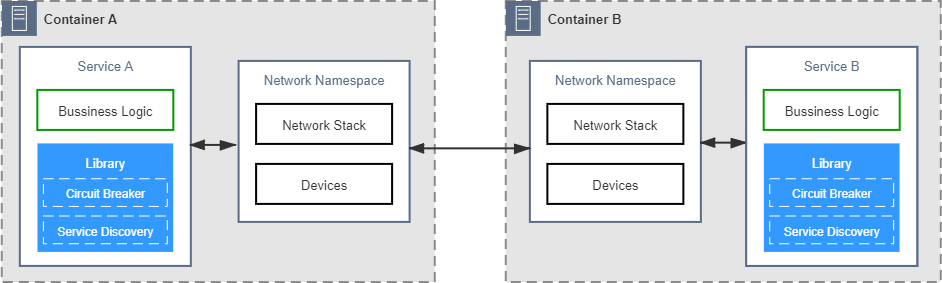
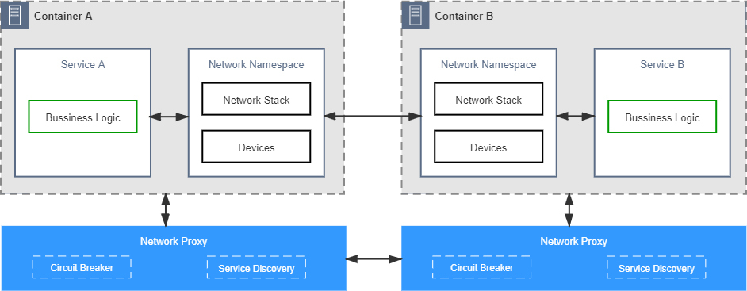
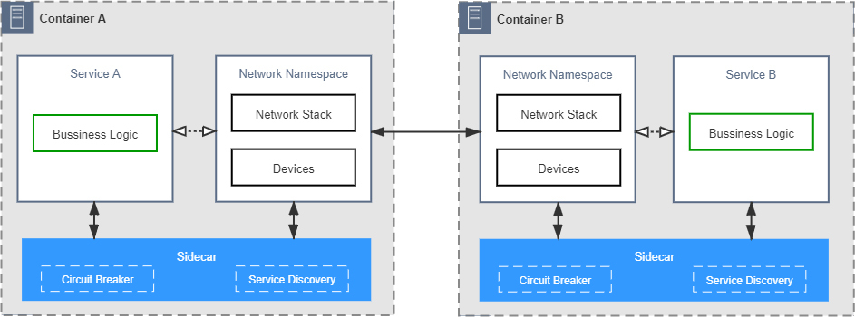
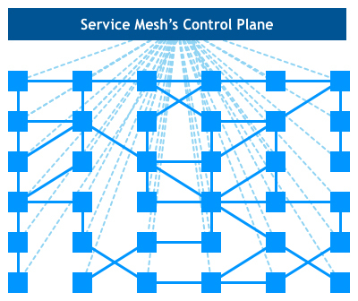

- 00 _导读 _ 什么是“The Fenix Project”？.md
- 00 开篇词 _ 如何构建一个可靠的分布式系统？.md
- 01 _ 原始分布式时代：Unix设计哲学下的服务探索.md
- 02 _ 单体系统时代：应用最广泛的架构风格.md
- 03 _ SOA时代：成功理论与失败实践.md
- 04 _ 微服务时代：SOA的革命者.md
- 05 _ 后微服务时代：跨越软件与硬件之间的界限.md
- 06 _ 无服务时代：“不分布式”云端系统的起点.md
- 07 _ 远程服务调用（上）：从本地方法到远程方法的桥梁.md
- 08 _ 远程服务调用（下）：如何选择适合自己的RPC框架？.md
- 09 _ RESTful服务（上）：从面向过程编程到面向资源编程.md
- 10 _ RESTful服务（下）：如何评价服务是否RESTful？.md
- 11 _ 本地事务如何实现原子性和持久性？.md
- 12 _ 本地事务如何实现隔离性？.md
- 13 _ 全局事务和共享事务是如何实现的？.md
- 14 _ 分布式事务之可靠消息队列.md
- 15 _ 分布式事务之TCC与SAGA.md
- 16 _ 域名解析系统，优化HTTP性能的第一步.md
- 17 _ 客户端缓存是如何帮助服务器分担流量的？.md
- 18 _ 传输链路，优化HTTP传输速度的小技巧.md
- 19 _ 如何利用内容分发网络来提高网络性能？.md
- 20 _ 常见的四层负载均衡的工作模式是怎样的？.md
- 21 _ 服务端缓存的三种属性.md
- 22 _ 分布式缓存如何与本地缓存配合，提高系统性能？.md
- 23 _ 认证：系统如何正确分辨操作用户的真实身份？.md
- 24 _ 授权（上）：系统如何确保授权的过程可靠？.md
- 25 _ 授权（下）：系统如何确保授权的结果可控？.md
- 26 _ 凭证：系统如何保证与用户之间的承诺是准确完整且不可抵赖的？.md
- 27 _ 保密：系统如何保证敏感数据无法被内外部人员窃取滥用？.md
- 28 _ 传输（上）：传输安全的基础，摘要、加密与签名.md
- 29 _ 传输（下）：数字证书与传输安全层.md
- 30 _ 验证：系统如何确保提交给服务的数据是安全的？.md
- 31 _ 分布式共识（上）：想用好分布式框架，先学会Paxos算法吧.md
- 32 _ 分布式共识（下）：Multi Paxos、Raft与Gossip，分布式领域的基石.md
- 33 _ 服务发现如何做到持续维护服务地址在动态运维中的时效性？.md
- 34 _ 路由凭什么作为微服务网关的基础职能？.md
- 35 _ 如何在客户端实现服务的负载均衡？.md
- 36 _ 面对程序故障，我们该做些什么？.md
- 37 _ 要实现某种容错策略，我们该怎么做？.md
- 38 _ 限流的目标与模式.md
- 39 _ 如何构建零信任网络安全？.md
- 40 _ 如何实现零信任网络下安全的服务访问？.md
- 41 _ 分布式架构中的可观测到底说的是什么？.md
- 42 _ 分析日志真的没那么简单.md
- 43 _ 一个完整的分布式追踪系统是什么样子的？.md
- 44 _ 聚合度量能给我们解决什么问题？.md
- 45 _ 模块导学：从微服务到云原生.md
- 46 _ 容器的崛起（上）：文件、访问、资源的隔离.md
- 47 _ 容器的崛起（下）：系统、应用、集群的封装.md
- 48 _ 以容器构建系统（上）：隔离与协作.md
- 49 _ 以容器构建系统（下）：韧性与弹性.md
- 50 _ 应用为中心的封装（上）：Kustomize与Helm.md
- 51 _ 应用为中心的封装（下）：Operator与OAM.md
- 52 _ Linux网络虚拟化（上）：信息是如何通过网络传输被另一个程序接收到的？.md
- 53 _ Linux网络虚拟化（下）：Docker所提供的容器通讯方案有哪些？.md
- 54 _ 容器网络与生态：与CNM竞争过后的CNI下的网络插件生态.md
- 55 _ 谈谈Kubernetes的存储设计理念.md
- 56 _ Kubernetes存储扩展架构：一个真实的存储系统如何接入或移除新存储设备？.md
- 57 _ Kubernetes存储生态系统：几种有代表性的CSI存储插件的实现.md
- 58 _ Kubernetes的资源模型与调度器设计.md
- 59 _ 透明通讯的涅槃（上）：通讯的成本.md
- 60 _ 透明通讯的涅槃（下）：控制平面与数据平面.md
- 61 _ 服务网格与生态：聊聊服务网格的两项标准规范.md
- 63 _ 基于Spring Boot的单体架构.md
- 64 _ 基于Spring Cloud的微服务架构.md
- 65 _ 基于Kubernetes的微服务架构.md
- 66 _ 基于Istio的服务网格架构.md
- 67 _ 基于云计算的无服务架构.md
- 春节特别放送（上）_ 有的放矢，事半功倍.md
- 春节特别放送（下）_ 积累沉淀，知行合一.md
- 用户故事 _ 詹应达：持续成长，不惧未来.md
- 结束语 _ 程序员之路.md
- 结课测试 _ 一套习题，测出你的掌握程度.md
59 _ 透明通讯的涅槃（上）：通讯的成本
你好，我是周志明。接下来这三节课，我们来学习目前最新的服务通讯方案：服务网格。
Kubernetes为它管理的工作负载提供了工业级的韧性与弹性，也为每个处于运行状态的Pod维护其相互连通的虚拟化网络。不过，程序之间的通信不同于简单地在网络上拷贝数据，一个可连通的网络环境，仅仅是程序间能够可靠通信的必要但非充分的条件。
作为一名经历过SOA、微服务、云原生洗礼的的分布式程序员，你必定已经深谙路由、容错、限流、加密、认证、授权、跟踪、度量等问题在分布式系统中的必要性。
在“远程服务调用”这个小章节里，我曾以“通信的成本”为主题，给你讲解了三十多年的计算机科学家们，对“远程服务调用是否可能实现为透明通信”的一场声势浩大的争论。而今天，服务网格的诞生在某种意义上，就可以说就是当年透明通信的重生，服务网格试图以容器、虚拟化网络、边车代理等技术所构筑的新一代通信基础设施为武器，重新对已经盖棺定论三十多年的程序间远程通信中，非透明的原则发起冲击。
今天，这场关于通信的变革仍然在酝酿发展当中。最后到底会是成功的逆袭，还是会成为另一场失败，我不敢妄言定论，但是作为程序通信发展历史的一名见证者，我会丝毫不吝啬对服务网格投去最高的期许与最深的祝愿。
通信的成本
程序间通信作为分布式架构的核心内容，我在第一个模块“演进中的架构”中，就已经从宏观角度讲述过它的演进过程。而在这节课里，我会从更微观、更聚焦的角度，分析不同时期应用程序该如何看待与实现通信方面的非功能性需求，以及它们是如何做到可靠通信的。
我会通过以下五个阶段的变化，帮助你理解分布式服务的通信是如何逐步演化成我们要探讨的主角“服务网格”的。
第一阶段：将通信的非功能性需求视作业务需求的一部分，由程序员来保障通信的可靠性。
这一阶段是软件企业刚刚开始尝试分布式时，选择的早期技术策略。这类系统原本所具有的通信能力不是作为系统功能的一部分被设计出来的，而是遇到问题后修补累积所形成的。
在刚开始时，系统往往只具备最基本的网络API，比如集成OKHTTP、gRPC这些库来访问远程服务，如果远程访问接收到异常，就编写对应的重试或降级逻辑去应对处理。而在系统进入生产环境以后，遇到并解决的一个个通信问题，就逐渐在业务系统中留下了越来越多关于通信的代码逻辑。
这些通信的逻辑由业务系统的开发人员直接编写，与业务逻辑直接共处在一个进程空间之中，如下图所示（注：这里以及后面的一系列图片中，我会以“断路器”和“服务发现”这两个常见的功能来泛指所有的分布式通信所需的能力，但你要知道实际上并不局限于这两个功能）。

控制逻辑和业务逻辑耦合
这一阶段的主要矛盾是绝大多数擅长业务逻辑的开发人员，其实都并不擅长处理通信方面的问题。要写出正确、高效、健壮的分布式通信代码，是一项极具专业性的工作。所以大多数的普通软件企业都很难在这个阶段支撑起一个靠谱的分布式系统来。
另一方面，把专业的通信功能强加于普通开发人员，这无疑为他们带来了更多工作量。尤其是这些“额外的工作”与原有的业务逻辑耦合在一起，让系统越来越复杂，也越来越容易出错。
第二阶段：将代码中的通信功能抽离重构成公共组件库，通信的可靠性由专业的平台程序员来保障。
开发人员解耦一贯依赖的有效办法是抽取分离代码与封装重构组件。实际上，微服务的普及也离不开一系列封装了分布式通信能力的公共组件库，其代表性产品有Twitter的Finagle、Spring Cloud中的许多组件等。
这些公共的通信组件由熟悉分布式的专业开发人员编写和维护，不仅效率更高、质量更好，还都提供了经过良好设计的API接口，让业务代码既可以使用它们的能力，又无需把处理通信的逻辑散布于业务代码当中。

抽取公共的分布式通信组件
分布式通信组件让普通程序员开发出靠谱的微服务系统成为可能，这是无可争议的成绩。但普通程序员使用它们的成本依然很高，不仅要学习分布式的知识，还要学习这些公共组件的功能的使用规范，最麻烦的是，对于同一种问题往往还需学习多种不同的组件才能解决。
造成这些问题的主要原因是因为通信组件是一段由特定编程语言开发出来的程序，是与语言绑定的，一个由Python编写的组件再优秀，对Java系统来说也没有太多的实用价值。目前，基于公共组件库开发微服务仍然是应用最为广泛的解决方案，但肯定不是一种完美的解决方案，这是微服务基础设施完全成熟之前必然会出现的应用形态，同时也一定是微服务进化过程中必然会被替代的过渡形态。
第三阶段：将负责通信的公共组件库分离到进程之外，程序间通过网络代理来交互，通信的可靠性由专门的网络代理提供商来保障。
为了能够让分布式通信组件与具体的编程语言脱钩，也为了避免程序员还要去专门学习这些组件的编程模型与API接口，这一阶段进化出了能专门负责可靠通信的网络代理。这些网络代理不再与业务逻辑部署于同一个进程空间，但仍然与业务系统处于同一个容器或者虚拟机当中，它们可以通过回环设备甚至是UDS（Unix Domain Socket）进行交互，可以说具备相当高的网络性能。
也就是说，只要让网络代理接管掉程序七层或四层流量，就能够在代理上完成断路、容错等几乎所有的分布式通信功能，前面提到过的Netflix Prana就属于这类产品的典型代表。

通过网络代理获得可靠的通信能力
在通过网络代理来提升通信质量的思路提出以后，其本身的使用范围其实并不算特别广泛，但它的方向是正确的。这种思路后来演化出了两种改进形态：
- 第一种形态，将网络代理从进程身边拉远，让它与进程分别处于不同的机器上，这样就可以同时给多个进程提供可靠通信的代理服务。这种形态逐渐演变成了今天我们常见的微服务网关。
- 第二种形态，如果将网络代理往进程方向推近，不仅能让它与进程处于同一个共享网络名称空间的容器组之中，还可以让它透明并强制地接管通讯，这便形成了下一阶段所说的边车代理。
第四阶段：将网络代理以边车的形式注入到应用容器，自动劫持应用的网络流量，让通信的可靠性由专门的通信基础设施来保障。
与前一阶段的独立代理相比，以边车模式运作的网络代理拥有两个无可比拟的优势：
- 它对流量的劫持是强制性的，通常是靠直接写容器的iptables转发表来实现。
此前，独立的网络代理只有程序首先去访问它，它才能被动地为程序提供可靠的通信服务，只要程序依然有选择不访问它的可能性，代理就永远只能充当服务者而不能成为管理者。上阶段的图中，保留的两个容器网络设备直接连接的箭头，就代表了这种可能性，而这一阶段的图例中，服务与网络名称空间的虚线箭头代表了被劫持后，应用程序以为存在，但实际并不存在的流量。
- 边车代理对应用是透明的，无需对已部署的应用程序代码进行任何改动，不需要引入任何的库（这点并不是绝对的，有部分边车代理也会要求有轻量级的SDK），也不需要程序专门去访问某个特定的网络位置。
这意味着它对所有现存程序都具备开箱即用的适应性，无需修改旧程序就能直接享受到边车代理的服务，这样使得它的适用面就变得十分广泛。目前边车代理的代表性产品有Linkerd、Envoy、MOSN等。

边车代理模式
如果说边车代理还有什么不足之处的话，那大概就是来自于运维人员的不满了。边车代理能够透明且具有强制力地解决可靠通信的问题，但它本身也需要有足够的信息才能完成这项工作，比如获取可用服务的列表、得到每个服务名称对应的IP地址等等。
而这些信息不会从天上掉下来自动到边车里去，是需要由管理员主动去告知代理，或者代理主动从约定的好的位置获取的。可见，管理代理本身也会产生额外的通信需求。如果没有额外的支持，这些管理方面的通信都得由运维人员去埋单，由此而生的不满便可想而知。为了管理与协调边车代理，程序间通信进化到了最后一个阶段：服务网格。
第五阶段：将边车代理统一管控起来实现安全、可控、可观测的通信，将数据平面与控制平面分离开来，实现通用、透明的通信，这项工作就由专门的服务网格框架来保障。
从总体架构看，服务网格包括两大块内容，分别是由一系列与微服务共同部署的边车代理，以及用于控制这些代理的管理器所构成。代理与代理之间需要通信，用以转发程序间通信的数据包；代理与管理器之间也需要通信，用以传递路由管理、服务发现、数据遥测等控制信息。
服务网格使用数据平面（Data Plane）通信和控制平面（Control Plane）通信来形容这两类流量，下图中的实线就表示数据平面通信，虚线表示控制平面通信。

实际上，数据平面与控制平面并不是什么新鲜概念，它最初就是用在计算机网络之中的术语，通常是指网络层次的划分。在软件定义网络中，也把解耦数据平面与控制平面作为其最主要的特征之一。服务网格把计算机网络的经典概念引入到了程序通信之中，既可以说是对程序通信的一种变革创新，也可以说是对网络通信的一种发展传承。
小结
分离数据平面与控制平面的实质是将“程序”与“网络”进行解耦，把网络可能出现的问题（比如中断后重试、降级），与可能需要的功能（比如实现追踪度量）的处理过程从程序中拿出来，放到由控制平面指导的数据平面通信中去处理，这样来制造出一种“这些问题在程序间通信中根本不存在”的假象，仿佛网络和远程服务都是完美可靠的。
而这种完美的假象，就让应用之间可以非常简单地交互，而不必过多地考虑异常情况；而且也能够在不同的程序框架、不同的云服务提供商环境之间平稳地迁移。与此同时，还能让管理者能够不依赖程序支持就得到遥测所需的全部信息，能够根据角色、权限进行统一的访问控制，这些都是服务网格的价值所在。
一课一思
远程通讯在性能上与本地访问有好几个数量级的差距，目前完全看不到有“透明”的可能性。不过，在功能上，在可预见的将来，是否有可能在实现透明的远程服务，业界仍然没有统一的共识，这个问题你的看法是什么？欢迎在留言区分享你的见解。
如果你觉得有收获，也欢迎把今天的内容分享给更多的朋友。感谢你的阅读，我们下一讲再见。
© 2019 - 2023 Liangliang Lee. Powered by gin and hexo-theme-book.